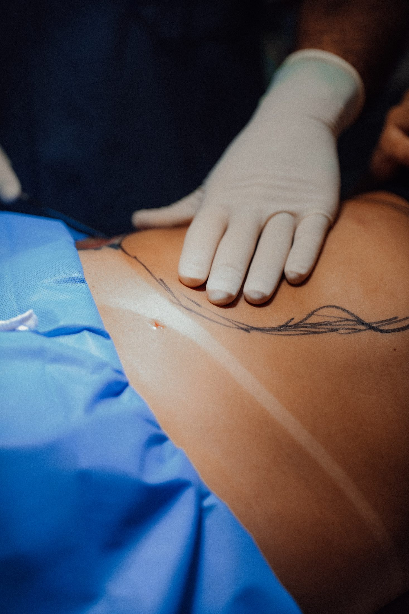

Corpo · Procedimento cirúrgico
A abdominoplastia remove o excesso de pele e gordura do abdome e trata a musculatura da parede abdominal, com possível reposicionamento do umbigo. É frequentemente procurada após gestações ou grandes variações de peso — da miniabdominoplastia à abdominoplastia completa, a técnica é definida caso a caso.

Objetivos do procedimento
Todo procedimento cirúrgico envolve riscos. A avaliação individual com um cirurgião plástico é indispensável para indicar o tratamento adequado a cada caso.
Perguntas frequentes
A abdominoplastia completa envolve incisão de quadril a quadril, tratamento de toda a área abdominal e possível reposicionamento do umbigo. A miniabdominoplastia é menos extensa e trata a região abaixo do umbigo. A indicação depende do exame físico.
Em geral, a recuperação inicial leva de 2 a 4 semanas, com retorno gradual às atividades; a recuperação completa pode levar de 3 a 6 meses. Os prazos variam caso a caso.
Como toda cirurgia, envolve riscos — entre eles infecção, sangramento, seromas, alterações de cicatrização e assimetrias. Eles são discutidos abertamente na consulta, junto às medidas de prevenção adotadas.
A cicatriz é planejada para se posicionar na linha do biquíni, em região habitualmente coberta pela roupa íntima. A extensão depende da quantidade de pele a ser tratada.
Em casos selecionados, a abdominoplastia pode ser associada à lipoaspiração ou a cirurgias das mamas — o chamado mommy makeover. A combinação depende de critérios de segurança avaliados individualmente.
Não. A cirurgia trata pele, gordura localizada e musculatura — não é um método de perda de peso. O ideal é estar com o peso estável antes do procedimento.
O próximo passo
Num hospital dedicado exclusivamente à cirurgia plástica, sua avaliação começa com escuta — e termina com um plano feito para você.